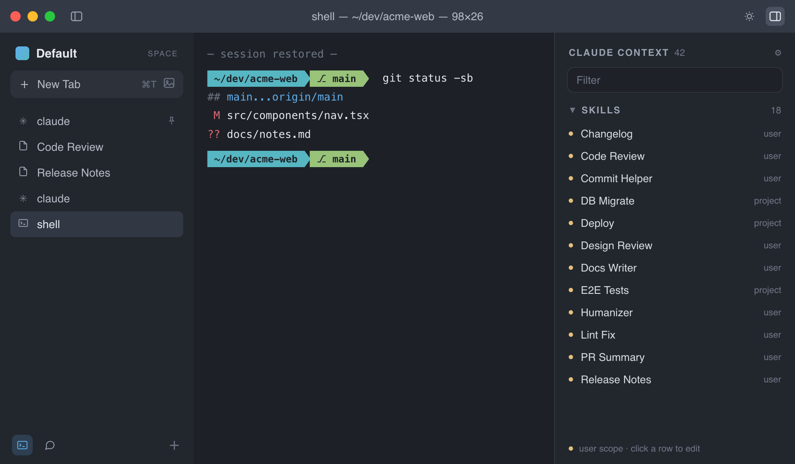
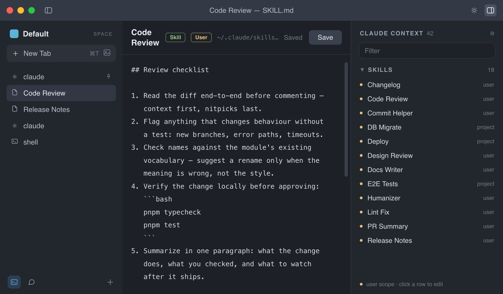

Arc-style Spaces for switching between projects without the tab hunt, plus one place to see every memory, skill, and plugin Claude has loaded.

Working on five projects at once? Switch Spaces instead of hunting through terminal tabs.

Most people have no idea what memory, skills, or plugins Claude has loaded. Now you can see — and edit — all of it.
Working across several projects back-to-back is tedious in a normal terminal. Zede groups sessions into Spaces you switch instantly, the way Arc groups browser tabs.
Claude Code carries memory, skills, plugins, and MCP tools across layers most people never see. Zede surfaces all of it, searchable, in one sidebar — so managing it isn't guesswork anymore.
Zede quietly distills facts, decisions, and preferences from your sessions into local, searchable memory — so context survives restarts.
Everything lives in a SQLite database on your own disk. Nothing is sent anywhere else, and you can delete it any time.
Claude's context normally lives and dies on a single machine. Zede syncs your memories, Spaces, and preferences to every Mac you use — through a private GitHub repo you own. No vendor server, and every synced file is plain markdown you can read.
Quit the app and reopen it: pinned tabs resume their last Claude session automatically. You can also save any conversation as a local snapshot and load it back later, context intact.
Building from source is the recommended path — there's no Apple signing yet, so a locally built app just opens.
git clone … && pnpm install && pnpm dist —
full steps in the README.
xattr -cr /Applications/Zede.app —
why, and other options.